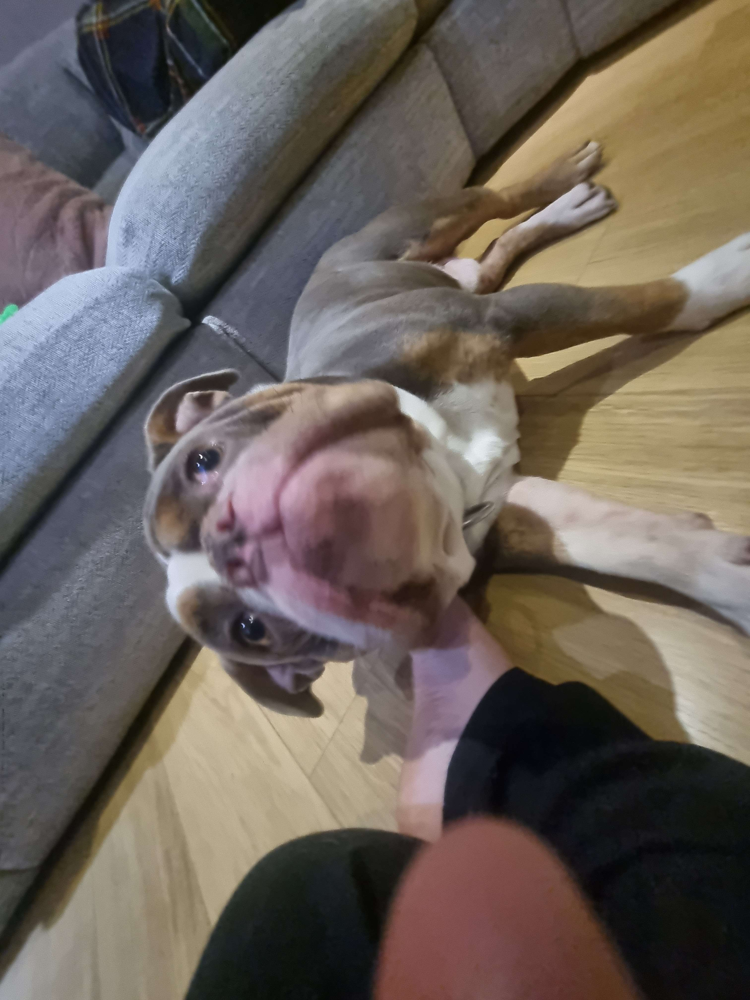

Hi, I am Joe i run things around here as i should!. I grind to keep my wife housed and my kids fed and i am the main man around here so respect my name!
Yo, I'm Mark, the head honcho around these parts. I hustle hard to keep the fam's roof over our heads and their bellies full. I'm the alpha in this pack, so show some respect for the name!
Sup, I'm Dave, the main man holding it down. I grind non-stop to keep my family's crib secure and their stomachs satisfied. I'm the top dog in this territory, so remember the name and give it some respect!

Who are we?
Welcome to the heart of Frankism, a community devoted to honoring the sacred essence of Frank, our cherished British Bulldog and American Bulldog mix. Founded on the principles of loyalty, companionship, and unconditional love, Frankism celebrates the divine bond between humanity and our beloved canine deity. Together, we find solace and joy in the presence of Frank, embracing his wisdom and affection as guiding lights in our lives. Join us in this journey of furry devotion, where every wag of the tail echoes the harmonious spirit of Frankism.